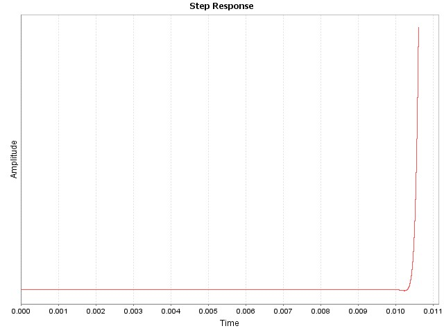

DCDT Report: Single-Loop
| Project Name | vm |
| Date | 10/10/2016 |
| Time | 11:18.35 |
Single Loop
Digital z-Domain
Analog s-Domain

Digital Nyquist
Digital Root Locus

Digital Step Response
Compensator Type: 2P2Z
Inputs
| Entry | Value |
|---|
| Pole 0 | 2.5000e+03 Hz |
| Pole 2 | 3.5000e+04 Hz |
| Zero 1 | 1.5900e+02 Hz |
| Gain(Kdc) | 1.000 |
| Warp | false |
| PWM Frequency | 1.0000e+05 |
| PWM Sampling Ratio | 1 |
| Sampling Frequency | 1.0000e+05 |
| PWM Max Resolution | 1.0600e-09 |
| Computational Delay | 1.3500e-06 |
| Gate Drive Delay | 1.5000e-09 |
| Control Output Min. | 0 |
| Control Output Max. | 32767 |
| Kuc Gain | 7.6025e+00 |
| Use Kuc Gain | false |
PWM Calculations
| Name | Value |
|---|
| Bits of Resolution | 13.204 |
| Gain | 1.060e-04 |
Digital Compensator Coefficients
| Name | Value | Normalized | Q15 | Hex |
|---|
| a1 | 0.953 | 0.115 | 3771 | 0x0EBB |
| a2 | 0.047 | 0.006 | 187 | 0x00BB |
| b0 | 8.276 | 1.000 | 32764 | 0x7FFC |
| b1 | 0.082 | 0.010 | 325 | 0x0145 |
| b2 | -8.193 | -0.990 | -32439 | 0x8149 |
s-Domain
Wp0 Wp2(Wz1 + s)
H(s) = Kdc X --- X ------------
s Wz1(Wp2 + s)
1.57e+04 2.20e+05(9.99e+02 + s)
H(s) = 1.000 X -------- X ----------------------
s 9.99e+02(2.20e+05 + s)
z-Domain
u(z) B0 + B1z^(-1) + B2z^(-2)
H(z) = --- = ------------------------
e(z) A0 - A1z^(-1) - A2z^(-2)
(8.276) + (0.082)z^(-1) + (-8.193)z^(-2)
H(z) = ---------------------------------------------
1 - (0.953)z^(-1) - (0.047)z^(-2)
Plant Type Hsys: Polynomial
Inputs
| Entry | Value |
|---|
| a0 | 3.300e+00 |
| |
| b0 | 1.0000e+00 |
| b1 | 1.0000e-03 |
s-Domain
a0
Hsys(s) = --------------
b0 + b1(s^1)
3.3000e+00
Hsys(s) = ------------------------------
1.0000e+00 + 1.0000e-03(s^1)
Feedback Type Hfb: Fixed Gain
Inputs
| Entry | Value |
|---|
| Gain | 1.000e+00 |
| Bandwidth | 1.000e+05 |
| ADC Resolution | 12-bit |
| ADC Conv. Latency | 3.00e-07 |
| ADC Operating Voltage | 3.30 |
| Output | 5.00 |
ADC Calculations
| Entry | Value |
|---|
| Sense Output | 5.000 |
| Counts Sense | 6205 |
| Pre-Shift | 3 |
s-Domain
BW(2pi)
H(s) = Kvadc X -----------
BW(2pi) + s
6.283e+05
H(s) = 1.000 X -------------
6.283e+05 + s